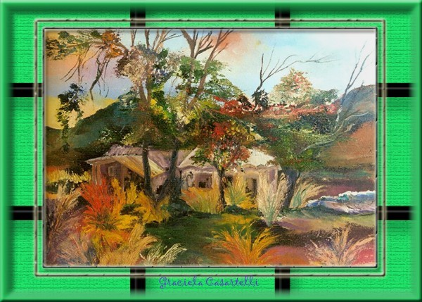

Cuando la lluvia...
|
Si no vienes,
Sabré que no tuvo sentido,
|
 "Cuando la lluvia..." Pintura al óleo
sobre tela de Graciela María Casartelli. |
¡Calla tu llamado!...
Esa voz angustiada
en el teléfono.
¡Finges!
Una vez más…
Como acostumbraste y
acostumbras:
¡Siempre mientes!
Siempre tienes una carta guardada,
cuando en el juego,
menos se espera.
La lumbre se ha apagado.
No inventes calor,
ni inventes llama.
Más bien: ¡Calla!
En las sombras,
podré ver aquello que me diste.
Es refulgente;
aunque erraste el camino de la dádiva.
No habrá confusiones,
entre el azul y el celeste.
Si no vienes, cuanto mi corazón te llama…
Desaparece…
para siempre…
No recordaré lo que me diste,
ni lo que me negaste:
Tu egoísmo fiel, a tus promesas.
Sabré que te he perdido,
cuando mezquines tus palabras,
en el teléfono.
Cuando la lluvia no cese en mi ventana
y estés…ausente…
Cuando te llame con mil temores,
dándome vueltas en la cabeza…
Y no te importe nada.
Si no vienes hoy, mientras anochece,
no vuelvas nunca…
Autor: Graciela María Casartelli
Unquillo, Sierras de Córdoba, Argentina.
Reservados todos los derechos.